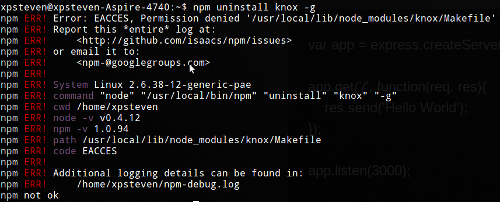

也紀念我們永遠的朋友 李士傑先生（Shih-Chieh Ilya Li）。
NPM - Node Package Manager
簡介
npm (Node Package Manager) 是 Node.js 下的主流套件管理程式。因為 javascript 易開發的特性，Node.js 的套件數量龐大，目前有 4,468 個套件發佈登記在 npm 的資料庫中。透過 npm 可以協助開發者安裝與移除 Node.js 套件，並發佈自己開發的套件。安裝
目前 npm 只能安裝在 Linux 環境，但隨著 Node.js 在 0.5 的不穩定分支開始支援 Windows 環境，npm 也對 Node.js 0.5 以上提供實驗版。本篇教學還是針對 Node.js 0.4 穩定分支，也就是 Linux 環境下的 npm 安裝與使用。
安裝 npm 要先注意是否有正確設定 NODE_PATH 環境變數，如果安裝 Node.js 時沒有另外設定 prefix 參數，NODE_PATH 應設定為 /usr/local/lib/node_modules；如果有設定 prefix，則 NODE_PATH 應為設定的 prefix 路徑 /lib/node_modules。Node.js 的安裝細節可以參考 https://github.com/joyent/node/wiki/Installation。
設定環境變數後，npm 的安裝非常簡單，只需執行下列指令：
$ curl https://npmjs.org/install.sh | sh
此時會自動安裝最新版本的 npm 到先前設定的 NODE_PATH 目錄中。
若在安裝過程中，若因執行權限不足而需要 root 權限時，可改用下列指令：
$ curl https://npmjs.org/install.sh | sudo sh
使用範例
在講解 npm 之前，先介紹一下 Node.js 的套件搜尋機制。
當 require 一個套件的時候，Node.js 會搜尋當前目錄的 node_modules 子資料夾和 NODE_PATH 環境變數所設定的目錄。所以套件可以選擇安裝在全域，也就是 NODE_PATH 所指定的目錄，或當前目錄的 node_modules 子資料夾。npm 也因此分成兩種模式：全域模式 (Global Mode) 管理 NODE_PATH 所指定的目錄套件，及本地模式 (Local Mode) 管理當前目錄的 node_modules子資料夾內的套件。
01. 安裝套件
請於命令列模式下輸入下列指令：
$ npm install [套件名稱]
預設安裝模式是本地模式。
若想要安裝到全域模式，則需加上 -g 參數，如下：
$ npm install [套件名稱] -g
例如，安裝 Node.js 下的主流 Web 開發框架 Express.js：
$ npm install express -g
02. 列出安裝的套件
請於命令列模式下輸入下列指令：
$ npm ls
預設列出本地模式的安裝套件，即安裝在 node_modules 子目錄夾的套件。
若想要列出全域模式的安裝套件，則需加上 -g 參數，如下：
$ npm ls -g
03. 移除套件
請於命令列模式下輸入下列指令：
$ npm uninstall [套件名稱]
預設移除本地模式的安裝套件，即安裝在 node_modules 子目錄夾的套件。
若想要移除全域模式的安裝套件，則需加上 -g 參數，如下：
$ npm uninstall [套件名稱] -g
04. 更新套件
請於命令列模式下輸入下列指令：
$ npm update [套件名稱]
預設更新本地模式的安裝套件，即安裝在 node_modules 子目錄夾的套件。
若想要更新全域模式的安裝套件，則需加上 -g 參數，如下：
$ npm update [套件名稱] -g
以上為更新單一套件，若想要更新所有套件，則只要不輸入套件名稱即可，如：
$ npm update
$ npm update -g
05. 搜尋套件
請於命令列模式下，輸入下列指令：
$ npm search [關鍵字]
另外，尋找套件也可以至 npm 套件庫網站 () 或 Node.js 官方的模組清單。
06. npm 本身的更新
請於命令列模式下輸入下列指令：
$ npm update npm -g
另外，也可以使用原先的安裝方式來進行更新：
$ curl https://npmjs.org/install.sh | sh
優缺點
npm 最大的優點可能也是最大的缺點，即透過冗餘安裝來解決套件相依性問題。如果要安裝套件 A 和套件 B，而兩者都相依於套件 C，則 npm 會在套件 A 和套件 B 的 node_modules 資料夾內同時安裝套件 C。換句話說，套件 C 被安裝了兩次。這種設計的好處是不會有相依性問題，但缺點就是同樣的套件會被安裝多次，當有需要編譯的套件被冗餘安裝多次時，更新會變得很緩慢，幸好絕大多數的套件都不需要編譯。
▲ 圖1：npm 透過冗餘安裝解決相依性問題
權限問題
安裝、移除和更新套件的時候，可能會需要 root 權限。可以透過 sudo 執行 npm 指令，或者是切換使用者到 root 。
▲ 圖2：權限不足導致無法移除套件
結語
因為 javascript 的興起，連帶促成 Node.js 套件的勃興。通常類似的功能都有數個套件可以選擇，在選擇套件上可以參考 github 上的 follower 數量，和近期的 commit log 來避免套件停止維護的情形，或者可以至 Node.js 套件搜尋引擎，按照 github 上的 follower 數量來排序。
OSSF Newsletter : 第 186 期 程式語言延伸模組管理系統
Tags: NPM, Node Package Manager, 套件管理系統, extension management tools, 延伸模組,
Category: Tech Column
Special


Address：No.128, Sec.2, Academia Rd., Institute of Information Science, Academia Sinica, Nangang District, Taipei City 11529, Taiwan (R.O.C).
Privacy Policy. Terms-of-use